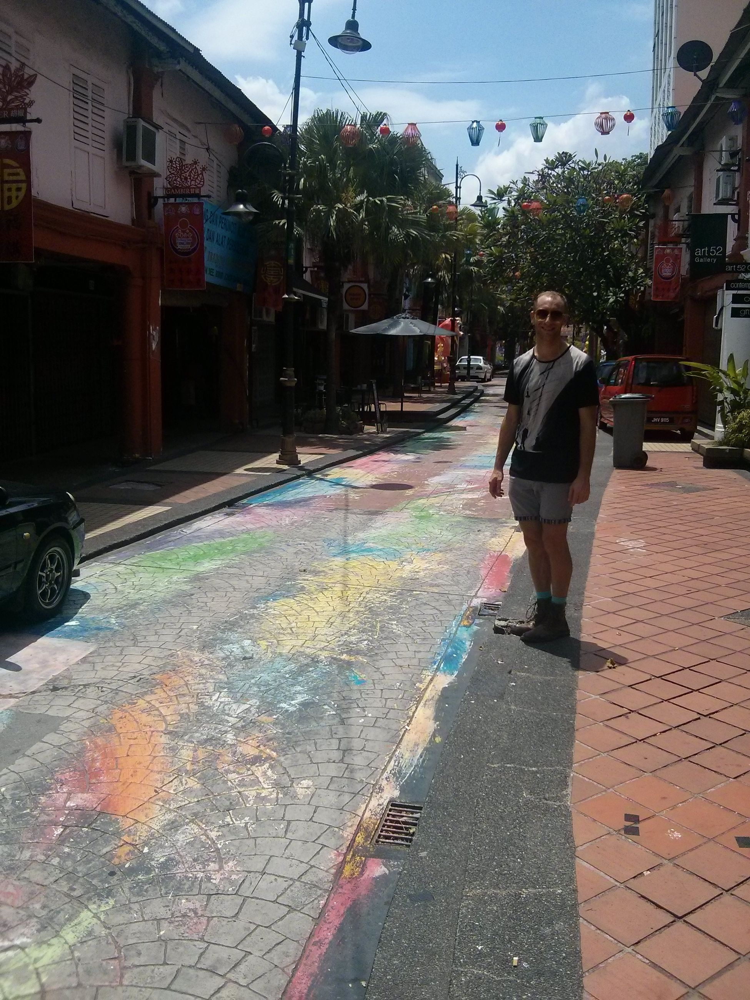
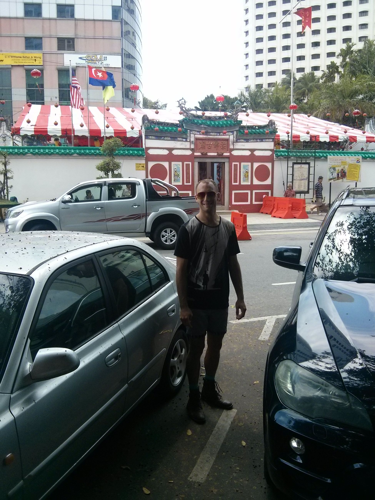

This is just a hop across the causeway, then you're there.
Our favorite part is this cute little hipster street that sells good banana bread. There are also a few good temples there, like most southeast Asian countries, and in general it's just cheap and good fun for a day trip. Still waiting to do a day-drunk-across-the-border trip..


Since then, we've been back with Jane once just for a quick trip to shop and look around. It's pretty much an industrial city, where a lot of Singaporeans go to get cheap gas. If you're brave enough to venture across the causeway on a Friday after work... be prepared.